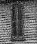

Adventures of Huckleberry Finn
1885

picture courtesy of "Mark Twain in His Times"
 |
Quarles Home, Florida,
MO (source of inspiration) "I have never consciously used him [Clemens's uncle John Quarles] or his wife in a book but his farm has come in handy to me in literature once or twice. In Huck Finn...I moved it down to Arkansas." Autobiography, 4 "We had a faithful and affectionate good friend, ally and advisor, in 'Uncle Dan'l', a middle-aged slave whose head was the best one in the Negro quarter, whose sympathies were wide and warm and whose heart was honest and simple and knew no guile. He has served me well these many, many years. I have not seen him for more than half a century and yet spiritually I have had his welcome company a good part of that time and have staged him in books under his own name and as 'Jim' and carted him all around--to Hannibal, down the Mississippi on a raft and even across the desert of Sahara in a balloon." Autobiography, 6 "Whenever witches were around, she [Aunt Hannah] tied up the remnant of her wool in little tufts, with white thread, and this promptly made the witches impotent" Autobiography, 6 |
 |
Hannibal,
MO (source of inspiration) "I vivedly remember seeing a dozen black men and women chained to one another, once, and lying in a group on the pavement, awaiting shipment to the southern slave market. Those were the saddest faces I have ever seen." Autobiography, 33 "'Huckleberry Finn' was Tom Blankenship...Tom's father was at one time Town Drunkard...In Huckleberry Finn I have drawn Tom Blankenship exactly as he was. He was ignorant, unwashed, insufficiently fed; but he had as good a heart as ever any boy had. His liberties were totally unrestricted. He was the only real independent person--boy or man--in the community, and by consequence he was tranquilly and continually happy and was envied by all the rest of us. We liked him; we enjoyed his society. And as his society was forbidden us by our parents the prohibition trebled and quadrupled its value, and therefore we sought and got more of his society than of any other boy's. I heard, four years ago, that he was a justice of the peace in a remote village in Montana and was a good citizen and greatly respected." Autobiography, 73-74 |
| Mississippi
River (source of inspiration) "A dozen young people privately agree that during a whole evening they will decieve one of their number by pretending they see & hear nothing which he sees & hears--& they will glance wonderingly at each other and seem to make furtive comments. An hour after he goes to bed they (the males) slip up & peep into his room & find him avoiding imaginary creature." from journal entry, on the Mississippi, January 1882-Frebruary 1883, as quoted in Mark Twain's Notebooks and Journals, Vol. II "...the little child['s] mother boxed its ears for inattention & presently when it did not notice the heavy slamming of a door, perceived that it was deaf." from journal entry, on the Mississippi, January 1882-February 1883, as quoted in Mark Twain's Notebooks and Journals, Vol. II "Darnell & Watson were the names of two men whose families had kept up a long quarrel. The old man Darnell & his 2 sons came to the conclusion to leave that part of the country. They started to take steamboat just above 'No. 10'. The Watsons got wind of it and as the young Darnells were walking up the companion way stairs with their wives on their arms they shot them in the back...One of these families lived on the Kentucky side, the other on the Missouri side near New Madrid. Once a boy 12 years old connected with the Kentucky family was riding thro the woods on the Mo. side. He was overtaken by a full grown man and he shot that boy dead...shortly afterwards there was another row at that place and a youth of 19 belonging to the Mo. tribe had wandered over there. Half a dozen of the Ky. tribe got after him. He dodged among the wood piles & answered their shots. Presently he jumped in the river & they followed on after him & peppered him & he had to make for the shore. By that time he was about dead--did shortly die...They used to attend church on the line...Both Darnell & Watson went to that church armed with shot guns, & neither party would allow the other to cross the line in that church." from journal entry, on the Mississippi, April-May 1882, as quoted in Mark Twain's Notebooks and Journals, Vol. II |
|
| "Quarry Farm", Elmira,
NY (site of actual writing) "I haven't piled up manuscript so in years as I have done since we came here to the farm three weeks and a half ago. I wrote four thousand words today and I touch three thousand and upward pretty often...And when I get fagged out, I lie abed a couple of days and read and smoke, and then go at it again for six or seven days." letter, as quoted in Mark Twain in Elmira "I enclose a specimen of villainy. A man pretends to be my brother & my lecture-agent--gathers a great audience together...& then pockets the money and elopes, leaving the audience to wait for the imaginary lecturer!" letter to John Brown, 4.27.1874, Elmira, NY, as quoted in Mark Twain's Letters, Vol. 6 |
Back to Life on the Mississippi | On to Connecticut Yankee